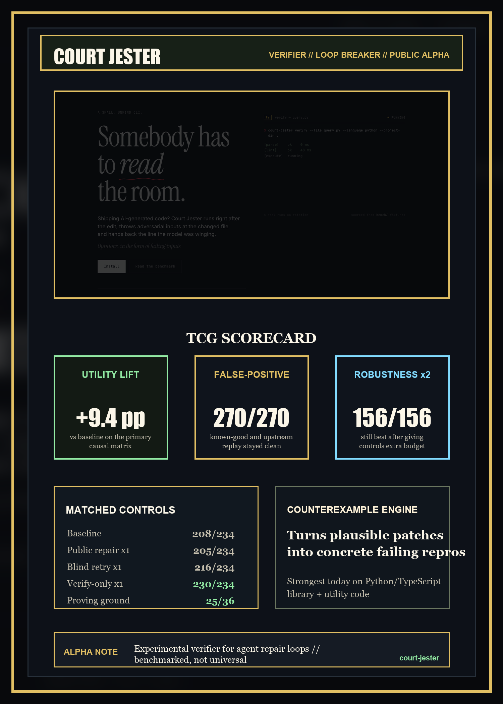

Benchmark note
Court Jester: concrete verifier feedback beats blind retry for coding agents.
AI coding agents fail in a predictable way: they write code that looks done, sometimes passes the obvious checks, and then fails where nobody explicitly disproved it. Court Jester is built for that moment.

Court Jester is not a CI replacement. It is not a universal software-correctness system. It is a hostile verifier that sits in the repair loop and tries to break the patch before the agent declares victory.
The important part is not just “verification.” It is the kind of feedback. Court Jester tries to turn plausible-but-wrong code into a concrete counterexample the model can repair against.
The question
The product question was never “can the verifier fail code?” Any aggressive verifier can fail code. The real question was whether verifier-guided repair improves final task success without buying the gain through false positives, public-test feedback, or extra retries that would have helped anyway.
- Utility: does final success improve?
- Precision: does the verifier avoid wrongly blocking correct code?
- Attribution: is the gain actually coming from verifier feedback?
What was benchmarked
The harness creates a fresh workspace for every run, applies task-specific setup, lets the agent edit code, runs Court Jester when the policy requires it, then runs public and hidden evaluation separately. Hidden checks only score the final output. They do not feed back into the loop.
The headline suite is core-current: a repeated semantic repair suite built to stress cross-file contract mistakes, canonicalization bugs, spec-like behavior mismatches, and hidden semantic misses that survive happy-path checks.
Precision is measured separately with known-good-corpus and external-known-good-replay. Mechanism is tested with public-repair-proving-ground, a suite chosen so public-test-guided repair has a fair chance to help.
The agent systems
This is a benchmark of CLI agent systems, not raw single-call model APIs: Claude Code through the claude_cli provider as claude-default, and Codex CLI through the codex_cli provider as codex-default. The claims below are about those systems under this harness.
The headline result
The primary causal matrix compares four conditions on the repeated core-current suite: one-shot baseline, public-test-guided repair, blind retry, and Court-Jester-guided repair.
| Policy | Result | Rate |
|---|---|---|
| Baseline | 208 / 234 | 88.9% |
| Public repair x1 | 205 / 234 | 87.6% |
| Blind retry x1 | 216 / 234 | 92.3% |
| Verify-only x1 | 230 / 234 | 98.3% |
Verify-only beat baseline by 9.4 percentage points, blind retry by 6.0 points, and public repair by 10.7 points. The gain is not just “more attempts help,” and it is not explained by visible public tests.
Precision controls
| Suite | Result |
|---|---|
| Local known-good | 80 / 80 |
| External upstream replay | 190 / 190 |
| Combined false-positive gauntlet | 270 / 270 |
The claim is not “Court Jester can never false-positive.” The claim is narrower: across the completed known-good and upstream replay controls, the tightened verifier stayed clean.
Public repair got a fair chance
The public-repair-proving-ground suite was built so public checks expose a meaningful part of the bug surface and can legitimately trigger repair. Public repair did help there, but verifier-guided repair still won clearly.
| Policy | Result | Rate |
|---|---|---|
| Baseline | 11 / 36 | 30.6% |
| Public repair x1 | 14 / 36 | 38.9% |
| Blind retry x1 | 19 / 36 | 52.8% |
| Verify-only x1 | 25 / 36 | 69.4% |
More budget did not erase the result
The two-repair core-current robustness matrix gave the controls more budget. They improved, which means they were live comparators rather than strawmen. Verify-guided repair still finished best.
| Policy | Result | Rate |
|---|---|---|
| Baseline | 137 / 156 | 87.8% |
| Public repair x2 | 140 / 156 | 89.7% |
| Blind retry x2 | 150 / 156 | 96.2% |
| Verify-only x2 | 156 / 156 | 100.0% |
What this actually claims
Not that program repair, iterative feedback, or execution-aware repair are new. Not that Court Jester is broadly ready for arbitrary external repositories. The supported claim is smaller and stronger: concrete verifier-generated counterexamples are a useful repair signal for coding agents, and that claim survives matched comparisons against public-test-guided repair, blind retry, false-positive controls, and a larger retry budget.
Reproducibility
The benchmark package is documented in docs/benchmark-2026-04-20.md, with suite names, policies, repeat counts, and artifact paths.
python3 -m bench.run_matrix \
--task-set core-current \
--models claude-default,codex-default \
--policies baseline,public-repair-1,retry-once-no-verify,repair-loop-verify-only \
--repeats 3 \
--schedule blocked-random \
--shuffle-seed 7 \
--output-dir bench/results/matrix/2026-04-18-paper-core-causal-r3-v2